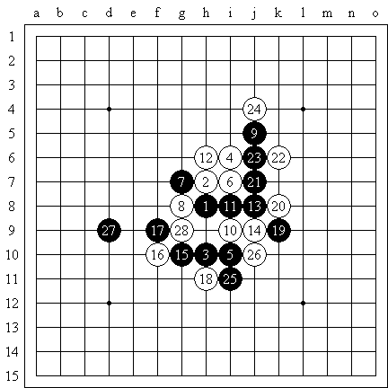
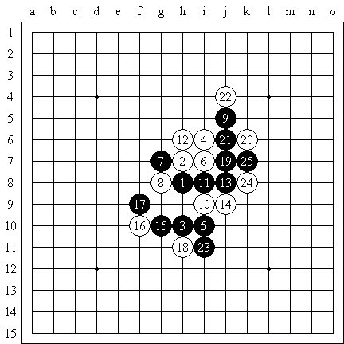
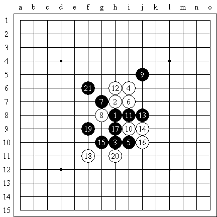

[学术讨论] 对俄罗斯12之瑞18终结的疑问
#1 [学术讨论] 对俄罗斯12之瑞18终结的疑问 作者：行云流水 发表时间：2008-8-6 9:32:27

请教白28后黑如何杀？原上传的终结中没有这个防御！
［此帖子已被 茗弈小刀 在 2009-4-22 20:31:34 编辑过］
#2 Re:对俄罗斯12之瑞18终结的疑问 作者：longfx 发表时间：2008-8-6 12:48:43
黑应对不慎,白有在K4或者K5的反杀.
难
#3 Re:对俄罗斯12之瑞18终结的疑问 作者：魔法少年 发表时间：2008-8-6 14:04:25

#4 Re:对俄罗斯12之瑞18终结的疑问 作者：行云流水 发表时间：2008-8-6 14:49:50
前一阵子，有不少朋友很兴奋的告诉我，这个必胜了，那个解决了，这个地毯，那个终结了。我很高兴于技术研究发展速度这么快，也很感谢大家提供的信息，但是个人有个不算好的习惯，对于公布的研究，无论是谁公布的，总喜欢自己再检查一遍。结果一经检查，往往会很失望的发现，这个研究少了几个强防；那个结论中几个点以后没有分支，而恰恰这又是最强的防御；还有的结论居然不过几个防御而已。所以时间长了，也就不那么敢轻易相信所谓的终结定论了。
能把自己的研究向大家公布，这中胸怀自然值得敬佩。但是窃以为公布之前还是要仔细核查为好，否则误导了大家，反而把好事办坏了。总觉得有点可惜。
#5 Re:对俄罗斯12之瑞18终结的疑问 作者：熊宝宝 发表时间：2008-8-6 15:18:47
=======上图对应的爱五子棋谱代码如下，以便你拆解：========
h8h9h6i10i6i9g9g8j11i7i8h10j8j7g6f6h7f5f7h5k10j9l9m8k11
======================================================
自己前面17下错了，怪人家后面杀不出？这种南辕北辙的较真精神不要也罢。一个变化是不是终结现在有专门的验证软件的，未来用软件进行终结研究和验证是大趋势，不劳您费心，何况您的水平实在不敢恭维。
#6 Re:对俄罗斯12之瑞18终结的疑问 作者：江南新绿 发表时间：2008-8-6 15:43:56

黑优吧，白棋没有什么机会
#7 Re:对俄罗斯12之瑞18终结的疑问 作者：堂堂 发表时间：2008-8-6 15:47:22
16反向可以杀嘛
#8 Re:Re:对俄罗斯12之瑞18终结的疑问 作者：江南新绿 发表时间：2008-8-6 16:22:43

黑棋好下吧，白棋想要防守有些困难的。
#9 Re:对俄罗斯12之瑞18终结的疑问 作者：行云流水 发表时间：2008-8-6 18:43:31
自己前面17下错了，怪人家后面杀不出？这种南辕北辙的较真精神不要也罢。
5楼的，你看清楚我的标题了吗？如果没有看清楚请不要随便说话。我是针对“五子痴”发在这里的“俄罗斯12之瑞18终结”的帖子提出的问题，你自己可以去看看那个17是怎么下的。
我没有对黑17如果走其他变化是否可以取胜提出置疑。请你先语文提高一下再发表意见！
#10 Re:对俄罗斯12之瑞18终结的疑问 作者：行云流水 发表时间：2008-8-6 18:43:50
一个变化是不是终结现在有专门的验证软件的，未来用软件进行终结研究和验证是大趋势，不劳您费心，何况您的水平实在不敢恭维。
如果不用软件对五子痴发的变化进行终结，也不会这么提出问题。我的水平的问题不劳您费心，谢谢！
#11 Re:对俄罗斯12之瑞18终结的疑问 作者：熊宝宝 发表时间：2008-8-7 11:38:58
呵呵，您要是真有水平，看到这个17就不会花时间去验这个变化，还装模作样拿出来给大家讨论了。您能告诉我现在还有哪位一流棋手在钻研松月1打旧谱上老下法的11黑后面能不能终结？或者瑞星3打旧谱的16白后面能不能终结?不会就您一个吧？呵呵，如果是这样，那我确实懒得再费心跟您说什么了。#12 Re:对俄罗斯12之瑞18终结的疑问 作者：行云流水 发表时间：2008-8-7 13:39:35
不好意思，或许就只有我一个。还可能真被您说着了。#13 Re:对俄罗斯12之瑞18终结的疑问 作者：茗弈小刀 发表时间：2008-8-7 13:41:37
谢谢顾老师对我们的关心和给我们指出的问题，也 谢谢大家的支持和意见！
5楼的17也是一个好点，但如果这个17，18必先冲再档。
#14 Re:对俄罗斯12之瑞18终结的疑问 作者：掌棋宣传员 发表时间：2008-8-7 15:51:11
唉,是不是真的终结了自己知道就行了,现在的人那么喜欢公开自己的研究做什么?
为了证明自己的实力大可以去比赛场上较量,论坛里吵架能分出胜负吗?
PS:职业8段棋手在国内也被人讽刺为菜鸟的话,中国五子棋的底蕴也太深了吧...
［ 有志青年 于 2008-8-8 7:08:26 时奖励此帖[金币加 20 威望加1］
#15 Re:对俄罗斯12之瑞18终结的疑问 作者：五子痴 发表时间：2008-8-7 16:15:14
为什么公布这个研究，因为我相信创新是进步的关键！也是对弈的乐趣所在！ 大家对一个很老的变化反覆下100年 又怎么能接触到新玩意？最科学的东西是要经得起实践推敲的。
［ 茗弈小刀 于 2008-9-22 16:33:44 时奖励此帖[金币加 20 威望加1］
#16 Re:对俄罗斯12之瑞18终结的疑问 作者：茗弈小刀 发表时间：2008-8-7 16:18:47
希望大家一起进步！希望大家尊重支持中国五子棋！［ 有志青年 于 2008-8-8 7:08:02 时奖励此帖[金币加 20 威望加1］
#17 Re:对俄罗斯12之瑞18终结的疑问 作者：隐藏菜系 发表时间：2008-8-7 17:58:29
 大家和和气气多好
大家和和气气多好［ 有志青年 于 2008-8-8 7:08:01 时奖励此帖[金币加 20 威望加1］
#18 Re:对俄罗斯12之瑞18终结的疑问 作者：雅典娜 发表时间：2008-8-8 9:48:38
咳，大+互相谅解点！是讨论，请勿人身攻击！
［ 有志青年 于 2008-8-8 10:24:16 时奖励此帖[金币加 20 威望加1］
#19 Re:Re:对俄罗斯12之瑞18终结的疑问 作者：紫菊 发表时间：2008-8-8 15:17:21
引用：
原文由 熊宝宝 发表于 2008-8-6 15:18:47 :
=======上图对应的爱五子棋谱代码如下，以便你拆解：========
h8h9h6i10i6i9g9g8j11i7i8h10j8j7g6f6h7f5f7h5k10j9l9m8k11
======================================================自己前面17下错了，怪人家后面杀不出？这种南辕北辙的较真精神不要也罢。一个变化是不是终结现在有专门的验证软件的，未来用软件进行终结研究和验证是大趋势，不劳您费心，何况您的水平实在不敢恭维。
如果白18=上图19， 20=上图18， 黑怎么杀，给个变化，谢谢。
#20 Re:对俄罗斯12之瑞18终结的疑问 作者：掌棋宣传员 发表时间：2008-8-8 18:53:18
世界上最可悲的就是要和无知的人争论.好在还是有知的人多.
大多数人知道我说的职业8段棋手是谁,这个人究竟能否配的上8段称号就行了.
某人要自封棋圣...与我无关...就当没看见, 继续拆自己的棋去了~
继续拆自己的棋去了~
#21 Re:对俄罗斯12之瑞18终结的疑问 作者：nara 发表时间：2008-8-8 22:02:54
吵来吵去有什么意思啊.大家和气点,宽容点,不是挺好的吗?
#22 Re:对俄罗斯12之瑞18终结的疑问 作者：掌棋宣传员 发表时间：2008-8-9 0:20:00
真正爱五子棋的人是不会挑头吵架的,谁不想专心做点研究啊~［ 有志青年 于 2008-8-9 8:27:17 时奖励此帖[金币加 20 威望加1］
#23 Re:对俄罗斯12之瑞18终结的疑问 作者：木月 发表时间：2008-8-9 1:44:29
那个那个熊宝宝啊，你跟石女什么关系啊，咋觉得你们很像呢。有没空来陪你木月大叔下几局啊
#24 Re:对俄罗斯12之瑞18终结的疑问 作者：uniwin 发表时间：2008-9-19 22:58:55
吵架是最没有意思的事情了，大家有空静下心来做点研究多好。每个人发表自己的建议可以，不要吵架！
#25 Re:对俄罗斯12之瑞18终结的疑问 作者：雅典娜 发表时间：2008-9-22 9:30:46
嗯,您认为有用的,多看一眼!您认为米用的请看其她文章,只做大+开心的事,莫做一丝一毫大+讨厌的事! 一句话: 论棋不论人!!!!!!［ 茗弈小刀 于 2008-9-22 11:16:30 时奖励此帖[金币加 20 威望加1］
#26 Re:对俄罗斯12之瑞18终结的疑问 作者：Suede 发表时间：2008-10-5 4:18:14
国家中某些带有劣根性思想的人民，正是影响国家发展的绊脚石；同样地，棋界中某些带有劣根性思想的棋友，亦是影响棋类发展的绊脚石…愿各位共勉之！